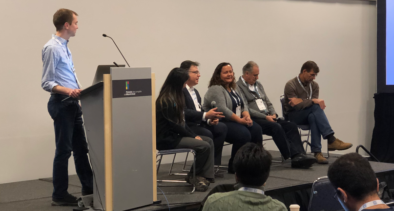
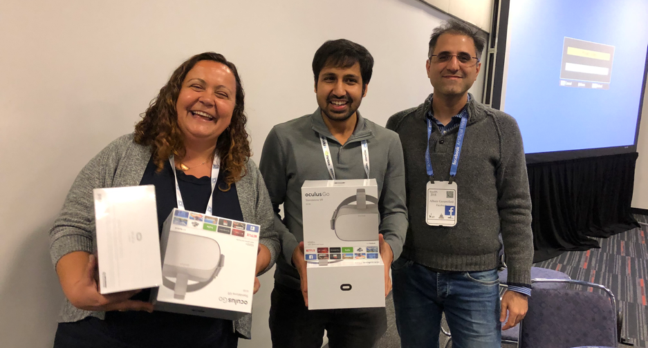

Conversational AI: Today's Practice and Tomorrow's Potential
About the workshop
In the span of only a few years, conversational systems have become commonplace. Every day, millions of people use natural-language interfaces such as Siri, Google Now, Cortana, Alexa and others via in-home devices, phones, or messaging channels such as Messenger, Slack, Skype, among others. At the same time, interest among the research community in conversational systems has blossomed: for supervised and reinforcement learning, conversational systems often serve as both a benchmark task and an inspiration for new ML methods at conferences which don't focus on speech and language per se, such as NeurIPS, ICML, IJCAI, and others. Research community challenge tasks are proliferating, including the seventh Dialog Systems Technology Challenge (DSTC7), the Amazon Alexa prize, and the Conversational Intelligence Challenge live competitions at NeurIPS (2017, 2018).
Following the overwhelming participation in our last year NeurIPS workshop (9 invited talks, 26 submissions, 3 orals papers, 13 accepted papers, 37 PC members, and couple of hundreds of participants), we are excited to continue promoting cross-pollination of ideas between academic research centers and industry. The goal of this workshop is to bring together researchers and practitioners in this area, to clarify impactful research problems, share findings from large-scale real-world deployments, and generate new ideas for future lines of research.
This workshop will include invited talks, contributed work, and open discussion. In these talks, senior technical leaders from both academia and industry will give insights into real usage and challenges at scale. An open call for papers will be issued, and we will prioritize forward-looking papers that propose interesting and impactful contributions. We will end the day with an open discussion, including a panel consisting of academic and industrial researchers.
Speakers
Schedule
- 9:00-9:10Opening Remarks (Alborz Geramifard)
- 9:10-9:40Invited Talk: Modeling the User in Socialbot Conversations (Mari Ostendorf)
- 9:40-10:10Invited Talk: Friction-Free Contextual Conversational AI (Ruhi Sarikaya)
- 10:10-10:30Poster Blitz
- 10:30-11:00Coffee Break / Hangup Posters
- 11:00-11:20Contributed Talk: Cross-lingual Transfer Learning for Multilingual Task Oriented Dialog
- 11:20-11:40Contributed Talk: DeepCopy: Grounded Response Generation with Hierarchical Pointer Networks ( Winner of Best Paper Award )
- 11:40-12:10Invited Talk: Conversational moves and blended conversation (Alexander Rudnicky)
- 12:10-1:50Lunch Break
- 1:50-2:20Invited Talk: Knowledge Grounded End-to-End Dialog (Lazaros Polymenakos)
- 2:20-2:40Contributed Talk: Improving Semantic Parsing for Task Oriented Dialog
- 2:40-3:00Contributed Talk: Dialog System Technology Challenge 7
- 3:00-3:50Coffee Break / Poster Session
- 3:50-4:10Contributed Talk: Global-to-local Memory Pointer Networks for Task-Oriented Dialogue
- 4:10-4:30Contributed Talk: Can You be More Polite and Positive? Infusing Social Language into Task-Oriented Conversational Agents
- 4:30-5:25Panel / Open Discussion - All Organizers (submit questions here )
- 5:25-5:30Closing Remarks (Jason Williams)
Accepted papers
Congratulations to Semih Yavuz, Abhinav Rastogi, Guan-lin Chao and Dilek Hakkani-Tür for winning our Best Paper Award!
- Dialog System Technology Challenge 7Koichiro Yoshino, Chiori Hori, Julien Perez, Luis Fernando D’Haro, Lazaros Polymenakos, Chulaka Gunasekara, Walter S. Lasecki, Jonathan K. Kummerfeld, Michel Galley, Chris Brockett, Jianfeng Gao, Bill Dolan, Xiang Gao, Huda Alamari, Tim K. Marks, Devi Parikh and Dhruv Batra
- Improving Semantic Parsing for Task Oriented DialogArash Einolghozati, Panupong Pasupat, Sonal Gupta, Rushin Shah, Mrinal Mohit, Mike Lewis and Luke Zettlemoyer
- DeepCopy: Grounded Response Generation with Hierarchical Pointer NetworksBest paperSemih Yavuz, Abhinav Rastogi, Guan-lin Chao and Dilek Hakkani-Tür
- Can You be More Polite and Positive? Infusing Social Language into Task-Oriented Conversational AgentsYi-Chia Wang, Runze Wang, Gokhan Tur, Hugh Williams
- Cross-lingual Transfer Learning for Multilingual Task Oriented DialogSebastian Schuster, Sonal Gupta, Rushin Shah, Mike Lewis
- Global-to-local Memory Pointer Networks for Task-Oriented DialogueChien-Sheng Wu, Caiming Xiong and Richard Socher
- Improving Robustness of Dialog Systems in a Data-Efficient Way with Turn DropoutIgor Shalyminov and Sungjin Lee
- A Study on Dialogue Reward Prediction for Open-Ended Conversational AgentsHeriberto Cuayáhuitl, Seonghan Ryu, Donghyeon Lee and Jihie Kim
- Few-Shot Generalization Across Dialogue TasksVladimir Vlasov, Akela Drissner-Schmid and Alan Nichol
- Detecting Offensive Content in Open-domain Conversations using Two Stage Semi-supervisionChandra Khatri, Behnam Hedayatnia, Rahul Goel Anushree Venkatesh, Raefer Gabriel and Arindam Mandal
- Flexible and Scalable State Tracking Framework for Goal-Oriented Dialogue SystemsRahul Goel, Shachi Paul, Tagyoung Chung Jeremie Lecomte, Arindam Mandal and Dilek Hakkani-Tur
- Modeling Non-Goal Oriented Dialog With Discrete AttributesChinnadhurai Sankar and Sujith Ravi
- An Interpretable (Conversational) VQA model using Attention based Weighted Contextual FeaturesYu Wang, Abhishek Patel, Yilin Shen, Hongxia Jin and Larry Heck
- Wizard of Wikipedia: Knowledge-powered Conversational agentsEmily Dinan, Stephen Roller, Kurt Shuster, Angela Fan, Michael Auli and Jason Weston
- A Bandit Approach to Posterior Dialog Orchestration Under a BudgetSohini Upadhyay, Mayank Agarwal, Djallel Bounneffouf, and Yasaman Khazaeni
- Cross-Lingual Approaches to Reference Resolution in Dialogue SystemsAmr Sharaf, Arpit Gupta, Hancheng Ge, Chetan Naik and Lambert Mathias
- On Modelling Uncertainty in Neural Language Generation for Policy Optimisation in Voice-Triggered Dialog AssistantsSihui Wang, Tom Gunter, David VanDyke, Thomas Voice and Blaise Thomson
- Toward Scalable Neural Dialogue State Tracking ModelElnaz Nouri and Ehsan Hosseini-Asl
- Incorporating the Structure of the Belief State in End-to-End Task-Oriented Dialogue SystemsLei Shu, Piero Molino, Mahdi Namazifar, Bing Liu, Hu Xu, Huaixiu Zheng and Gokhan Tur
- A Multimodal Dialogue System for Conversational Image EditingTzu-Hsiang Lin, Trung Bui, Doo Soon Kim and Jean Oh
- Leveraging User Engagement Signals For Entity Labeling in a Virtual AssistantDeepak Muralidharan, Justine Kao, Xiao Yang, Lin Li, Lavanya Viswanathan, Mubarak Seyed Ibrahim, Kevin Luikens, Stephen Pulman, Ashish Garg, Atish Kothari and Jason Wiiliams
- Neural Machine Translation for Paraphrase GenerationAlex Sokolov and Denis Filimonov
- TransferTransfo: A Transfer Learning Approach for Neural Network Based Conversational AgentsThomas Wolf, Victor Sanh, Julien Chaumond and Clement Delangue
Call for papers
We invite you to submit your contributions here in the area of conversational AI by October 25th 11:59 PM EST in NeurIPS style with maximum of 8 pages excluding the references. You can add supplementary material in addition to 8 pages, but reviewers are not required to review the extra material (e.g. your paper should stand on its own without the supplementary material). Notifications will be sent out by November 21st . Selected papers will be presented through invited talks or posters. Maximum allowed size of posters is 36 x 48 inch (91 x 122 cm). Notice that our workshop is not archival. However, accepted submission will be hosted on this website similar to last year’s workshop. Given authors concern around posting their submissions to arXiv the organizing committed decided to lift the anonymity requirement for our workshop. This means the anonymity will be optional and decided by the authors. Hence, you can post your submissions to arXiv. For further questions, feel free to reach out to co-chairs through email.
Organizers


Program committee
Photos

